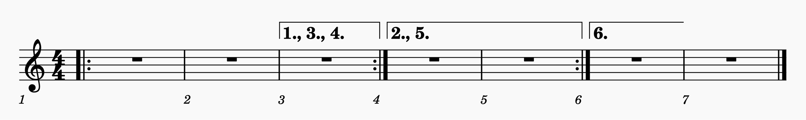
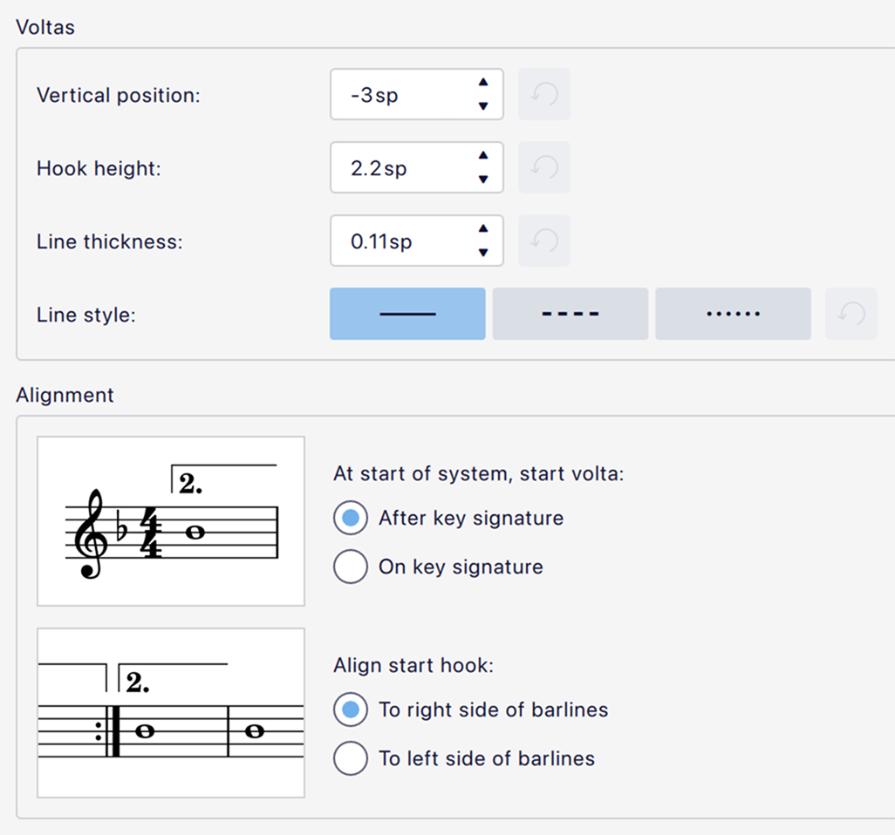

Voltas
Volta brackets are lines above the staff used to mark different endings for a repeated section. MuseScore Studio creates correct playback. In the example below, the repeated section is played once through with the ending marked "1.", then a second time with the ending marked "2.".

Adding voltas to your score
- Make sure that repeat barlines are in the correct position.
- To apply the volta bracket, use one of the following: * Select a measure and click on the desired volta in the Repeats & jumps palette, or * Drag a volta from a palette onto a measure.
To change the range covered after the volta has been added, see Adjusting elements directly.
Changing appearance of voltas
The appearance of voltas can be changed via the Properties panel. See #volta-properties, below. Note that changing the text is purely visual and does not affect playback.
Changing playback of voltas
- Select a volta in the score.
- Go the Properties panel and find the Volta section.
- Select the Style tab and edit the Repeat list value.
The Repeat list specifies which times through the music under the volta should be played. For example, a value of 1 means that the passage will be played only the first time, and will be skipped other times. 2 means it will be played only the second time.
If the volta is to be played more than once, you can enter a series of numbers separated by commas, e.g. 1,2,3. In this case, you must also edit the end repeat's Play count property accordingly. See Repeat signs. The play count is usually the number of Repeat list entries plus 1. For example:

This example plays back the measures in this sequence: 1–3, 1–2, 4–5, 1–3, 1–3, 1–2, 4–5, 1–2, 6–8.
To achieve this, the following properties are set:
- For Repeats:
- In measure 3, Play count is set to
4 - In measure 5, Play count is set to
3 - Voltas:
- In measure 3, Repeat list is set to
1,3,4and Beginning text is set to1., 3., 4. - In measures 4–5, Repeat list is set to
2,5and Beginning text is set to2., 5. - In measure 6, Repeat list is set to
6and Beginning text is set to6.
To ignore all repeats during playback, see Repeat signs.
Volta properties
In the properties panel, there are two tabs for voltas: Style and Text.
The only option specific to voltas is Style -> Repeat list which is used to specify which repeats the volta applies to. See #changing-playback-of-voltas, above.
For all the other options in Style, see Other lines. For the options in Text, see Entering and editing text and Formatting text.
Voltas style
Styles for voltas can be found in Format -> Style -> Voltas:

- Vertical position: The default position of the horizontal line of the volta.
- Hook height: The height of the vertical hook (note that if this value is close to or larger than Vertical position then this will determine the position of the whole item, as it will automatically move up to avoid colliding with the staff).
- Line thickness: The thickness of the line.
- Line style: Solid, dashed or dotted.
There are two options to control the alignment of the beginning of the volta:
- At start of system, start volta: This controls whether the vertical hook should start after or on the key signature. Note that this affects also affects the continuation of a volta line when it continues to a new system.
- Align start hook: This controls whether the vertical hook should align to the left or right side of the thick barline in a repeat.
Styles for the text under voltas can be found in Format -> Style -> Text styles under Volta.